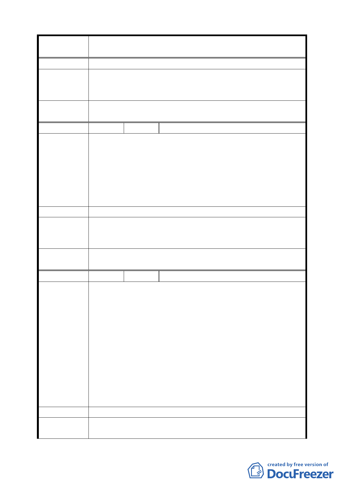

案 名 臺北市文山區都市計畫通盤檢討（細部計畫）案
望可開放公司登記辦公用途。
專案小組
審查結論
（94.7.11）
本案陳情意見屬建築管理問題，移請工務局建築管理處協助
辦理。
委員會議
決議
依專案小組審查結論修正為「臺北市建築管理處協調處理」。
編 號 ２1 陳情人 洪美珍、蔡毓真（09430144000）
建議位置：公訓段三小段 163-1 地號（興隆路 10 弄 207 巷 1、
3、9 號）。
陳情理由
（細木 2）
建議理由：
一、 163-1 地號面積僅 60 平方公尺，與 163-4 地號間有興隆
路 207 巷 10 弄間隔，不具開闢公園意義。
二、 該地現在惠生幼稚園圍牆內，並向國產局繳納費用使用
承租中。
建 議 辦 法 請將該地維持為住宅區，勿變更為公園用地。
專案小組
審 查 結 論 同編號 16。
（94.7.4）
委員會議
決議
同編號 16。
編 號 ２2 陳情人 工務局新建工程處（09430157600）
建議位置：興隆路一段 83 巷。
建議理由：
一、 現有興隆路一段 83 巷 7 號旁至 55 巷 27 弄間路段邊坡
高差約達 12 公尺，若依原計畫道路範圍開闢，則需大
量護坡用地，影響邊坡水土保持，且開挖亦恐危及邊坡
陳情理由
上方建物之結構安全，惟本路段並未列入變更範圍。
（ 細 興 4 ） 二、 有關擬變更為 4 公尺人行步道之路段，其臨 55 巷 27
弄高差約 35 公尺，消防救災車輛難以進入，故建議人
行步道之寬度、轉彎半徑、高程等應考量目前該區域住
戶之消防救災功能。
三、 依變更案內容萬盛街 166 巷擬將部分路段變更為公園
用地，將造成計畫道路無尾現象。
建 議 辦 法 建議變更道路線型或廢除該計畫道路。
專案小組
審查結論
同編號 10。
三八